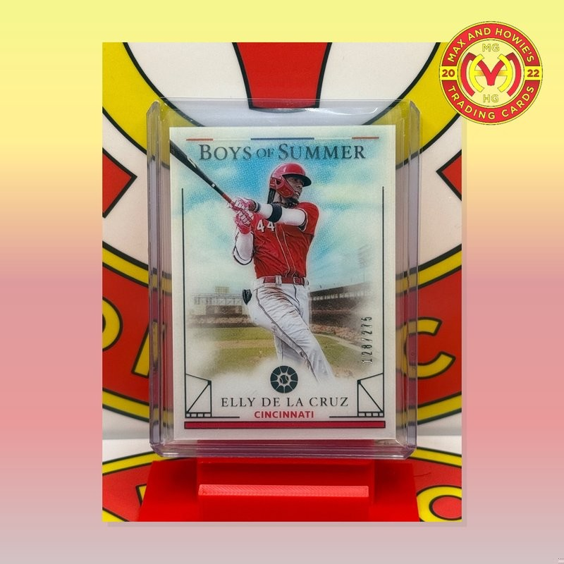
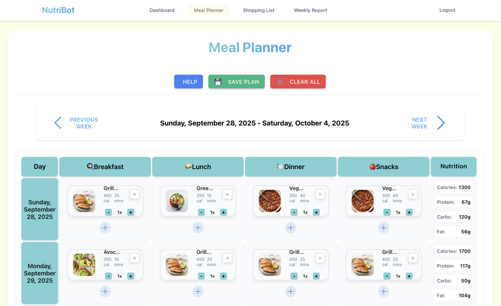
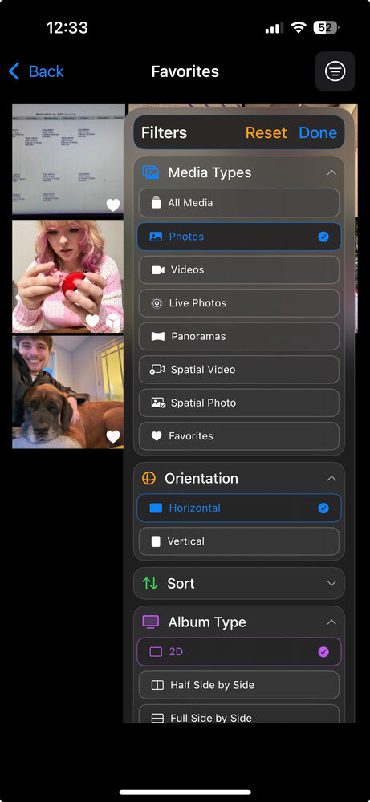
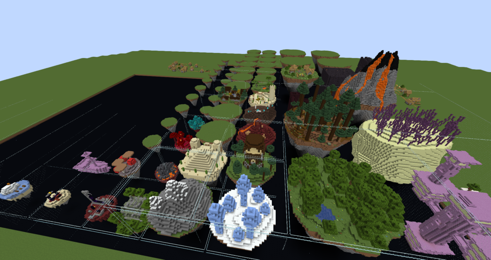
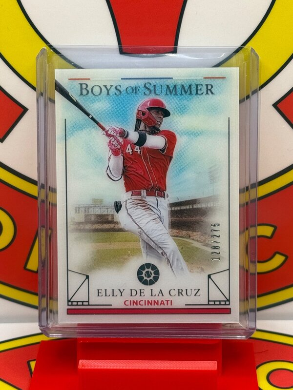
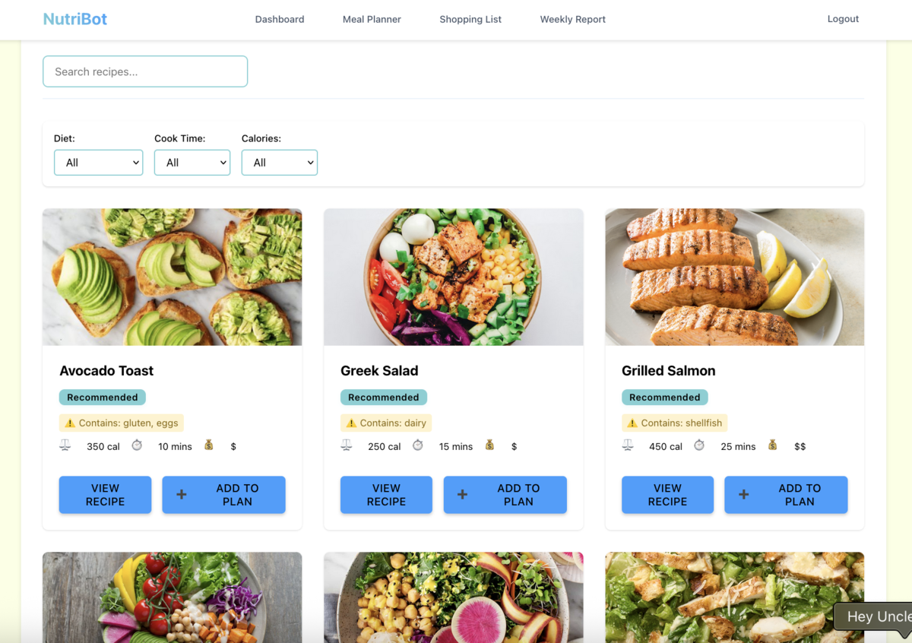

Comprehensive Python automation that integrates with the eBay Trading API to standardize product imagery across the entire inventory. A companion Aurora processor web app lets store owners preview padding colors, logo placement, and preferred border styles before the service batches through the listings.
Delivered full visual consistency, robust error handling, and scheduled autonomous service

Personalized Nutrition and Meal Planning Platform
NutriBot creates tailored meal plans based on dietary needs, allergies, and preferences. I designed the scheduling UI, recipe filtering workflow, and automated shopping list generation so users can plan an entire week in minutes.
Nutrition data integration, personalization algorithms, responsive UI design
Automated plan generation with allergy-aware ingredient management

SwiftUI Photo Management and Filtering Interface
Advanced photo filtering and album management system for a 3D screen protector application. Built an intuitive SwiftUI workflow that helps users organize image collections for optimal 3D viewing.
Improved 3D viewing workflow with efficient filtering of large libraries


Hydreon Lifeboat Minecraft Projects
Builder and QA tester for Hydreon's Lifeboat Minecraft server and Marketplace releases. Crafted build checklists, tracked bugs, and helped ship maps on the official Bedrock store—including the popular One Block Challenge where players expand from a single block island.
Map building, collaborative QA pipelines, release coordination for live marketplace content
Balanced gameplay polish with creative world-building for server events and marketplace packs
90-Day Development Challenge
A personal challenge to build small interactive projects daily, focusing on rapid prototyping and experimentation. Created an interactive showcase for people to interact with and play around with what I've made.
Daily coding practice with WebGL, Three.js, and JavaScript frameworks
Rapid prototyping focused on interactive demos and visual experiments
Image Processing Results
Example before-and-after outputs from the eBay automation pipeline.

Original product photo
Standardized square image generated by the automation
NutriBot Interface Gallery
Key screens from the NutriBot planner, showing the weekly scheduling workflow and recipe selection interface.
Weekly meal planning dashboard

Recipe discovery and filtering
Hydreon Lifeboat Gallery
Screenshots from Minecraft builds and QA environments delivered for Hydreon’s Lifeboat projects.